Considere um sistema linear onde a matriz é triangular superior, ou seja,
Podemos resolver esse sistema iniciando pela última equação e isolando obtemos
|
| (4.13) |
Substituindo na penúltima equação
|
| (4.14) |
e isolando 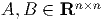 obtemos
|
| (4.15) |
e continuando desta forma até a primeira equação obteremos
|
| (4.16) |
De forma geral, temos que
|
| (4.17) |
Para resolver um sistema triangular superior iniciamos da última linha em direção a primeira.
Para resolver um sistema triangular inferior podemos fazer o processo inverso iniciando da primeira equação.
Vamos contar o número total de flops para resolver um sistema triangular inferior. Note que o custo para um sistema triangular superior será o mesmo.
Na linha 3, temos uma divisão, portanto 1 flop.
Na linha 5 quando , temos
x(2)=(b(2)-L(2,1:1)*x(1:1))/L(2,2),
ou seja, 1 subtração+1 multiplicação + 1 divisão 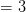 flops.
Quando 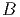,
x(3)=(b(3)-L(3,1:2)*x(1:2))/L(3,3)
temos 1 subtração+(2 multiplicações + 1 soma) +1 divisão 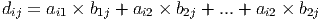 flops.
Quando 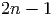, temos 1 subtração+(3 multiplicações + 2 somas) +1 divisão 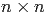 flops.
Até que para 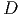, temos
x(n)=(b(n)-L(n,1:n-1)*x(1:n-1))/L(n,n),
com 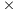 subtração+(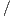 multiplicações + 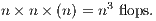 somas) + 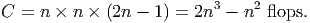 divisão, ou seja, 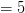 flops.
Somando todos esses custos3 temos que o custo para resolver um sistema triangular inferior é
|
| (4.19) |
e utilizando que a soma dos 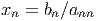 inteiros é uma progressão aritmética4
|
| (4.20) |